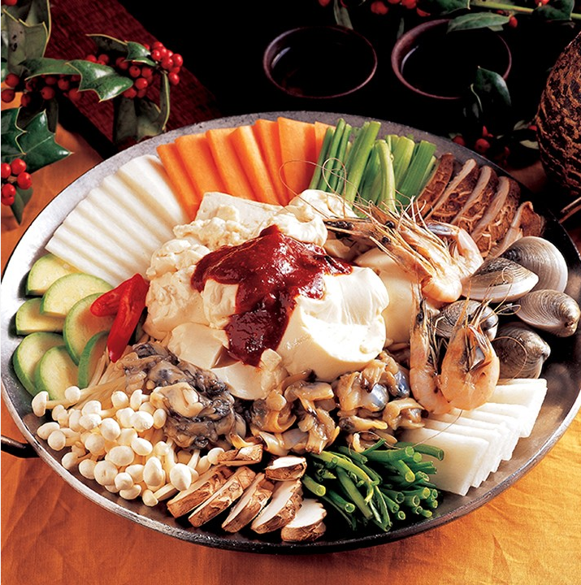

한번 맛보면
잊을 수 없는 강릉의 맛
여행코스에서 빼 놓을 수 없는 것,
바로 먹거리 즐기기!
다양한 먹거리가 가득한 강릉의 원조의 맛부터
젊은 입맛까지 사로잡는 맛까지 모두 즐겨보세요.
강릉으로 떠나는 맛기행 4선

한번 맛보면 잊을수 없는 원조의 맛
강릉짬뽕순두부 동화가든
강릉짬뽕순두부 동화가든은 짬뽕순두부를 국내 최초로 개발한 집으로
국내의 수많은 방송매체에서 극찬한 초당두부마을의 순두부 맛집입니다.
전통방식의 맛두부
순두부백반
'밭에서 나는 쇠고기'인 콩으로 만든 두부는 콩 제품 중 가장 대중적이고 완벽에 가까운 음식으로
양질의 식물성 단백질이 풍부하며
남녀노소 누구에게 인기가 좋은 대중적인 맛이며
부드럽고 고소하며 뒷맛이 깔끔합니다.
싱싱한 바다의 맛
물회
물회는 감자옹심이, 막국수와 같이 강원도의 향토음식으로서 파, 마늘, 양파와 함께
해산물을 잘게 썰어 넣어 매콤하게 양념하여 찬물을 부어 먹는 회 요리를 말합니다.
강릉은 동해바다와 대관령의 맑은 물이 있는 청정도시여서 사시사철 신선한 해산물이
풍부하기 때문에 회를 맛보는 방법도 다양하게 발달하였습니다.
경포해변의 별미진미횟집
경해횟집
동해안 바닷가에서 많이 잡히는 강릉지역의 대표 해산물들은 문어, 오징어, 홍게, 킹크랩, 송어 등
다양한 편이며 생선을 이용한 요리들도 매우 다양합니다.
활어회는 단백질이 풍부하고 지방 함량이 낮아 다이어트에 효과적이며
비타민, DHA 등이 풍부하여 고혈압과 같은 성인병 예방에 탁월합니다.